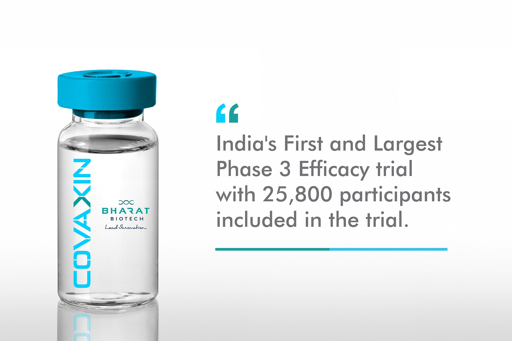
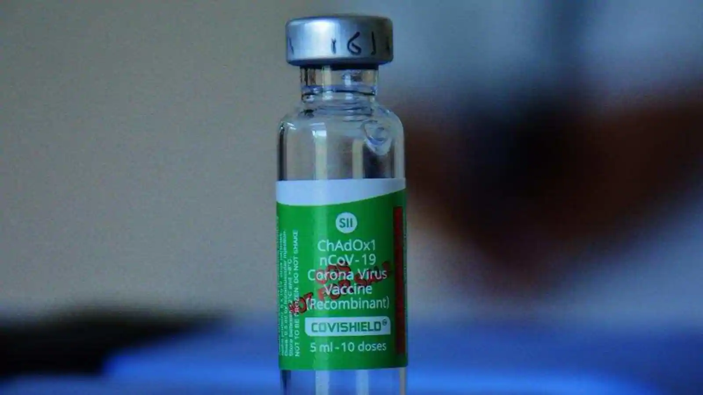

INDIAN COVID STATUS:
Total Cases:
30,316,897
Total Deaths:
397,668
Total Recovered:
29,366,601
Latest News
Moderna’s vaccine will be the fourth Covid-19 jab to be available in India after Covishield, Covaxin and Sputnik
India’s drug regulator DCGI has granted permission to Mumbai-based pharmaceutical company Cipla to import Moderna’s Covid-19 vaccine for restricted emergency use in the country.
View More
51 cases of Delta plus variant have been reported in 12 states, says health ministry
The current cause of concern in India and across the world is the Delta Plus variant of coronavirus. The highly transmissible variant is also believed to be impervious to some vaccines and therapies, concerning the experts.
View More
Less Than 40,000 New Daily Covid Cases, A First In Over 3 Months
India reported 37,566 new Covid cases in the last 24 hours, with daily infections dropping below 40,000 for the first time in over three months.
View More
Record vaccinations may not stop a deadly third wave in India.
Officials in New Delhi rejoiced earlier this week when India hit a single-day record by administering more than 8 million Covid-19 vaccinations. But even this unprecedented pace may not be fast enough for a country just emerging from a devastating second wave to head off a third one, experts say.
View MoreThe begin of covid... The first human cases of COVID-19, the disease caused by the novel coronavirus causing COVID-19, subsequently named SARS-CoV-2 were first reported by officials in Wuhan City, China, in December 2019. Retrospective investigations by Chinese authorities have identified human cases with onset of symptoms in early December 2019. While some of the earliest known cases had a link to a wholesale food market in Wuhan, some did not. Many of the initial patients were either stall owners, market employees, or regular visitors to this market. Environmental samples taken from this market in December 2019 tested positive for SARS-CoV-2, further suggesting that the market in Wuhan City was the source of this outbreak or played a role in the initial amplification of the outbreak. The market was closed on 1 January 2020

SARS-CoV-2 was identified in early January and its genetic sequence shared publicly on 11-12 January. The full
genetic sequence of SARS-CoV-2 from the early human cases and the sequences of many other virus isolated from
human cases from China and all over the world since then show that SARS-CoV-2 has an ecological origin in bat
populations. All available evidence to date suggests that the virus has a natural animal origin and is not a
manipulated or constructed virus. Many researchers have been able to look at the genomic features of SARS-CoV-2
and have found that evidence does not support that SARS-CoV-2 is a laboratory construct. If it were a constructed
virus, its genomic sequence would show a mix of known elements. This is not the case.
All the published genetic sequences of SARS-CoV-2 isolated from human cases are very similar. This suggests that the
start of the outbreak resulted from a single point introduction in the human population around the time that the
virus was first reported in humans in Wuhan, China in December 2019.
World Corona Cases Tracker:

The Covid Pandemic in India is a part of the worldwide pandemic of coronavirus disease 2019 (COVID-19) caused by severe acute respiratory syndrome coronavirus 2 (SARS-CoV-2). The first case of COVID-19 in India, which originated from China, was reported on 30 January 2020.Currently, India has the largest number of confirmed cases in Asia.[6] As of 12 June 2021, India has the second-highest number of confirmed cases in the world (after the United States) with 29.3 million reported cases of COVID-19 infection and the third-highest number of COVID-19 deaths (after the United States and Brazil) at 367,081 deaths. The first cases of COVID-19 in India were reported in the towns of Thrissur, Alappuzha and Kasargod, all in the state of Kerala, among three Indian medical students who had returned from Wuhan. Lockdowns were announced in Kerala on 23 March, and in the rest of the country on 25 March. By mid-May 2020, five cities accounted for around half of all reported cases in the country: Mumbai, Delhi, Ahmedabad, Chennai and Thane.[12] On 10 June, India's recoveries exceeded active cases for the first time.[13] Infection rates started to drop in September, along with the number of new and active cases. Daily cases peaked mid-September with over 90,000 cases reported per-day, dropping to below 15,000 in January 2021.
A second wave beginning in March 2021 was much larger than the first, with shortages of vaccines, hospital beds, oxygen cylinders and other medicines in parts of the country.[15] By late April, India led the world in new and active cases. On 30 April 2021, it became the first country to report over 400,000 new cases in a 24-hour period. Health experts believe that India's figures have been underreported due to several factors.
Timeline Of Corona in India:
- 2020
- On 30 January 2020, India reported its first case of COVID-19 in Thrissur, Kerala.
- Cases rose to three by 3 Feburary 2020.
- On 4 March 22 new cases were reported, including 14 infected members of an Italian tourist group.
- On 12 March, a 76-year-old man, with a travel history to Saudi Arabia, became the first COVID-19 fatality of India.
- A Sikh preacher, who had a travel history to Italy and Germany, turned into a superspreader by attending a Sikh festival in Anandpur Sahib during 10–12 March.
- On 31 March, a Tablighi Jamaat religious congregation event in Delhi, which had taken place earlier in March, emerged as a COVID-19 hotspot.
- On 2 May, around 4,000 stranded pilgrims returned from Hazur Sahib in Nanded, Maharashtra to Punjab. Many of them tested positive, including 27 bus drivers and conductors who had been part of the transport arrangement.
- In July 2020, it was estimated based on antibody tests that at least 57% of the inhabitants of Mumbai's slums may have been infected with COVID-19 at some point
- By October pandemic has peaked.
- 2021
- India began its vaccination programme on 16 January 2021.
- By February 2021, daily cases had fallen to 9,000 per-day.
- By early-April 2021, a major second wave of infections took hold in the country
- On 9 April, India surpassed 1 million active cases,[52] and by 12 April, India overtook Brazil as having the second-most COVID-19 cases worldwide.
- By late April, India passed 2.5 million active cases and was reporting an average of 300,000 new cases and 2,000 deaths per-day
- On 30 April, India reported over 400,000 new cases and over 3,500 deaths in one day.
- On 25 May, the country reported 195,994 new cases—its lowest daily increase since 13 April.
- In May 2021, WHO declared that two variants first found in India will be referred to as 'Delta' and 'Kappa'.
COVID IS NOW IN INDIA
Lock Down:
On the evening of 24 March 2020, the Government of India under Prime Minister Narendra Modi ordered a nationwide lockdown for 21 days, limiting movement of the entire 1.38 billion (138 crore) population of India as a preventive measure against the COVID-19 pandemic in India
On 14 April, Prime minister Narendra Modi extended the nationwide lockdown until 3 May, on written recommendation of governors and lieutenant governors of all the states, with a conditional relaxations after 20 April for the regions where the spread had been contained or was minimal.
On 1 May, the Government of India extended the nationwide lockdown further by two weeks until 17 May.
On 17 May, the lockdown was further extended till 31 May by the National Disaster Management Authority.
On 30 May, it was announced that lockdown restrictions were to be lifted from then onwards, while the ongoing lockdown would be further extended till 30 June for only the containment zones. Services would be resumed in a phased manner starting from 8 June. It was termed as "Unlock 1.0".
Impact on India
Economical Impact
The Indian economy was expected to lose over ₹32,000 crore (US$4.5 billion) every day during the first 21-days of complete lockdown, which was declared following the coronavirus outbreak. Under complete lockdown, less than a quarter of India's $2.8 trillion economic movement was functional. Up to 53% of businesses in the country were projected to be significantly affected.
Impact on Health System
On 25th March, 2020, hoping to suppress the spread of the coronavirus, India began the world’s largest lockdown, affecting 1.3 billion people. However, the sudden move to close down all but essential services threw millions out of work and began a desperate exodus of migrant and day labourers out of the big cities and into the countryside to their home villages. The implementation of the lockdown left a lot to be desired. The period was wasted and not used to ramp up testing and other capacities. India is leading among all countries when it comes to the COVID-19 caseload. We suddenly also notice the rush to make vaccines which will take at least 12 to 16 months to be ready.
Impact on Education System
Though the outbreak of COVID-19 has created many negative impacts on education, educational institutions of India have accepted the challenges and trying their best to provide seamless support services to the students during the pandemic. Indian education system got the opportunity for transformation from traditional system to a new era.
Info you need to know

How do the test works?
Most tests for COVID-19 involve taking a swab sample from the back of the nose ,throat or both.Some tests required blood sample. These tests aim to find out if a person has, or has ever had, an infection with severe acute respiratory syndrome coronavirus 2. This virus that causes coronavirus disease 19(COVID-19). A molecular or antigen test can tell whether a person currently has the infection regardless of whether they have any symptoms. A serological or antibody test shows whether the body has antibodies to the virus. It cannot show whether a person has an active infection.
INDIAN VACCINES
COVAXIN
- Covaxin is an inactivated viral vaccine.
- This vaccine is developed with Whole-Virion Inactivated Vero Cell-derived technology.
- They contain inactivated viruses, which can not infect a person but still can teach the immune system to prepare a defence mechanism against the active virus.
- Efficacy: 77.8%
COVISHEILD
- Covishield has been prepared using the viral vector platform which is a totally different technology.
- A chimpanzee adenovirus – ChAdOx1 – has been modified to enable it to carry the COVID-19 spike protein into the cells of humans.
- Well, this cold virus is basically incapable of infecting the receiver but can very well teach the immune system to prepare a mechanism against such viruses.
- Efficacy: 70.42%
Primary Safety Measures:
This video is a proper guide for the primary level safety measurs to avoid
covid-19. Important meausres are:
- Wash Your Hands
- Wear a Mask
- Maintain Social Distance
- Get Vaccinated
- Stay Home Stay Safe
Variants of covid
When a virus is widely circulating in a population and causing many infections, the likelihood of the virus mutating increases. The more opportunities a virus has to spread, the more it replicates – and the more opportunities it has to undergo changes. Most viral mutations have little to no impact on the virus’s ability to cause infections and disease. But depending on where the changes are located in the virus’s genetic material, they may affect a virus’s properties, such as transmission (for example, it may spread more or less easily) or severity (for example, it may cause more or less severe disease).
Frequently Asked Questions
1.What are the main covid symptoms?
ans: Most common symptoms are
- Fever
- Dry cough
- Tiredness
Less common symptoms are aches and pains,
- aches and pains
- sore throat
- diarrhoea
- headache
- loss of taste or smell
Serious symptoms are
- Difficulty in breathing
- chest pain
- loss of speech or moment
Seek immidiate medical attention if you have Serious symptoms.
2.Is Vaccine safe?
ans: A vaccine needs to pass through several stages of trails before the manufacturer apply for approval. Vaccine trails involve a large no of people. At first, specific long term effects of any new medical treatment ,including a vaccine, are unknown. The key is to balance the potential risks of getting vaccine that has undergone extensive testing with the known dangers of developing COVID-19.
3.Should pregnant woman take vaccine?
ans: While pregnancy puts women at higher risk to severe Covid-19 very little data are available to assess vaccine safety in pregnancy. Pregnant women may may receive the vaccine if the benefit of vaccinating a preganant woman outweights the potential vaccine risks.
4.Who should not take vaccine?
ans: People with a history of severe allergic reaction to any component of the vaccine should not take it. The vaccine has been tested in children above 16 years of age. Therefore, at this time, WHO does not recommend vaccinantion of children below 16 years of age, even if they belong to high-risk group.
5.What is the recommended dosage?
ans: A protective effect starts to develop 12 days after the irst dose, but full protection requires two doses which WHO recommends be administered with a 21 to 28 day interval. Additional research is needed to understand longer term potential protection after single dose, If you are getting COVAXIN, then second dose should be taken within 4 to 6 weeks. If you are getting COVISHIELD, the second dose should be taken in 4 to 8 weeks.
6.What should one do when mild symptoms are observed?
ans:
- Isolate yourself in a well ventilated room
- Use a triple layer medical mask, discard mask after every 8 hours of use.
- In the even of caregiver entering the room, both caregiver and patient may consider using N 95 mask.
- Mask should be discarded after disinfecting with 1& sodium Hypochlorite
- Be hydrated
- Follow respiratory etiquettes at all times
- Frequently wash your hands with soap or alchohol based sanitizer atleast for 40 sec
- Don't share your personal items at any cost
- Ensure cleaning of surfaces in contact
- Monitor temperature and oxygen saturation
- Be in regular touch with physician
Instructions for care givers
- Wear a triple layer mask or N 95 mask
- Hand hygiene must be ensured
- Avoid direct contact with body fluids of patient, particularly oral and respiratory secretions . Use disposable gloves while handling patient. Perform hand hygiene before and after removing gloves.
Ask us something?
Ask your query